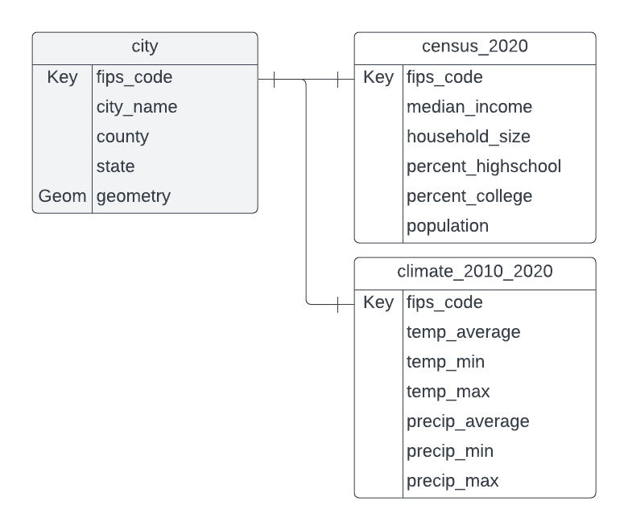

1 Concepts
1.1 What is a relational database?
A relational database is a set of data in tables that are related to each other in some way. That’s it. A database is just a collection of related tables.
Generally each table can be connected to another table by a column that both tables have that stores the information to match up the rows. This column is called a key. For example, your student or employee ID number is a key commonly used on campus.
If you’ve done GIS, you already use a database. A shapefile is essentially just a fancy a table. And if you’re ever joined a .csv table to a shapefile, you’ve performed a database process called a join. Using multiple spatial datasets in a GIS relates the data by location, if not by tabular data.
1.2 What is a Spatial Database?
A spatial database is a normal database (i.e. a set of related tables) but at least one of the tables has a column that holds spatial information commonly called the “geometry”. The geometry information is stored as a Binary Large Object (BLOB). The geometry information allows us to relate the tables to each other based on their location and also to perform spatial analysis on our data.
Below is an example of a database entity relationship diagram (ERD) for tables in an example (imaginary, yet plausible) spatial database. At least one column in each table relates to a column in another table (indicated in this diagram by a line drawn between the two columns). Documenting a database with a diagram like this is common practice. It provides a quick visual reference to the data contained in each table and how the tables relate to each other. The city table is a spatial table. The geometry column provides the spatial information that allows the city polygons to be mapped. The other tables are tabular data that can be joined to the spatial table using the key, in this case, the Federal Information Processing System (FIPS) Code, a system that assigns unique numeric codes to geographic entities such as cities, counties, and states. FIPS codes help us have a standardized key that prevents mismatches from variations in names (such as “Davis” vs. “City of Davis”).

1.3 What is Spatial SQL?
SQL stands for “structured query language” and it’s a language that allows you to ask questions of a database. Spatial SQL is regular SQL but with some additional functions that perform spatial analysis. Spatial SQL functions typically work on the geometry column.
If you’ve ever written an attribute query in ArcGIS or QGIS, you’ve worked with SQL. Example: Hey GIS program, please highlight all the records in my attribute table that have “Yolo” in the “county” column! In SQL, we would write SELECT * FROM city WHERE county = 'Yolo'; It’s actually quicker to write that query than to fill out the interface in the GIS.
A spatial join is an example of a spatial operation that you may have performed in a GIS that can also be performed using SQL. For example, if we had a dataset of business locations, we might query which businesses are inside of city boundaries. SELECT * from businesses, cities WHERE ST_Intersects(businesses.geometry, city.geometry); It’s much quicker to write the query than fill out the spatial join interface.
1.4 Why should you learn to work with spatial databases and spatial SQL?
- It’s a good way to work with large amounts of data
- Typically faster to run a process in a spatial database than in a desktop GIS program
- Store lots of data (compare with shapefile’s 70m row limit)
- One database file stores many, many tables –> easier data management
- Write a query instead of making a new file (no exporting of intermediate results to shapefile necessary!)
1.5 What makes this challenging?
If you’re a GIS user, you’re probably used to a graphical user interface (GUI) where you can see your data, have tools with guided interfaces, and can see the results of your processing immediately. These aren’t things you get with a typical database manager tool, however, we can connect our database to QGIS so we can see our results and, with practice, you will get used to the typical workflow and seeing everything won’t be so necessary.
Frequently Asked Question: Can I use spatial databases with R or Python? Yes! Look for libraries that can read data from your database file or can query your database to create data tables to use in your code.
1.6 Databases that support Spatial SQL:
- DB Manager in QGIS
- Oracle
- MySQL
- SQL Server
- SpatiaLite
- PostGRES with the PostGIS extension
- Others too!
We’ll be working with the DB (database) Manager in QGIS, because it works on all the common computer operating systems and is fairly easy to install. QGIS also allows us to seamlessly view our results on a map. Once you learn the basics, you can choose the database program that best fits your needs.